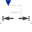
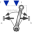
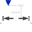
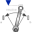
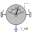
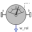
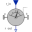
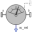
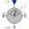

ResolveInFrameABEnumeration to define the frame in which a relative vector is resolved (world, frame_a, frame_b, frame_resolve) |
Information
This information is part of the Modelica Standard Library maintained by the Modelica Association.
| Types.ResolveInFrameAB. | Meaning |
|---|---|
| world | Resolve vector in world frame |
| frame_a | Resolve vector in frame_a |
| frame_b | Resolve vector in frame_b |
| frame_resolve | Resolve vector in frame_resolve (frame_resolve must be connected) |
Enumeration Literals (4)
| world |
Resolve in world frame |
|---|---|
| frame_a |
Resolve in frame_a |
| frame_b |
Resolve in frame_b |
| frame_resolve |
Resolve in frame_resolve (frame_resolve must be connected) |
Used in Components (13)
|  |
Modelica.Mechanics.MultiBody.Forces Force acting between two frames, defined by 3 input signals and resolved in frame world, frame_a, frame_b or frame_resolve |
|
Modelica.Mechanics.MultiBody.Forces Torque acting between two frames, defined by 3 input signals and resolved in frame world, frame_a, frame_b or frame_resolve |
|
|  |
Modelica.Mechanics.MultiBody.Forces Force and torque acting between two frames, defined by 3+3 input signals and resolved in frame world, frame_a, frame_b or frame_resolve |
|  |
Modelica.Mechanics.MultiBody.Forces.Internal Force acting between two frames, defined by 3 input signals |
|  |
Modelica.Mechanics.MultiBody.Forces.Internal Torque acting between two frames, defined by 3 input signals |
|
Modelica.Mechanics.MultiBody.Sensors Measure relative kinematic quantities between two frame connectors |
|
|  |
Modelica.Mechanics.MultiBody.Sensors Measure relative position vector between the origins of two frame connectors |
|
Modelica.Mechanics.MultiBody.Sensors Measure relative velocity vector between the origins of two frame connectors |
|
|  |
Modelica.Mechanics.MultiBody.Sensors Measure relative angular velocity between two frame connectors |
|  |
Modelica.Mechanics.MultiBody.Sensors Transform relative vector in to another frame |
|
Modelica.Mechanics.MultiBody.Sensors.Internal Basic sensor to measure relative position vector |
|
|  |
Modelica.Mechanics.MultiBody.Sensors.Internal Basic sensor to measure relative angular velocity |
|  |
Modelica.Mechanics.MultiBody.Sensors.Internal Transform relative vector into another frame |